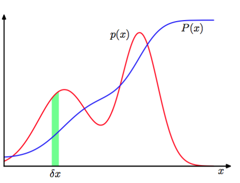

除了考虑离散事件的概率外，我们还希望考虑连续变量的概率。我们会把的讨论限制在一个相对非正式的形式上。如果一个实值变量落在区间的概率由给出，其中，那么我们就把称作的概率密度（probability density）。图1.12阐释了这个概念。位于区间的概率由下式给出:

图 1.12: 连续变量的概率密度函数
因为概率是非负的，并且的值必须在实轴上，所以概率密度必须满足这两个条件：
在变量的非线性变化下，概率密度由一个简单的函数通过Jacobian因子变换得到。例如：一个变量 ，那么函数 就变成 。现在，考虑概率密度，与它对应的关于新变量的密度，其中不同的下标表示 是不同的两个密度函数。观测区间变换为区间，当很小时，我们有 即：
这个性质的一个结果就是：概率密度的最大值取决于变量的选择。
位于区间的概率是由累计分布函数（cumulative distribution function）给出的：
它就像图1.12那样满足。
果我们有几个连续变量，一起被记作向量，那么我们就定义：联合概率密 度是使得落在包含点的无穷小体积的点的概率等于。多变量概率密度必须满足
其中积分必须包含整个空间。这也适用于离散变量和连续变量相结合的联合概率分布。
注意：如果是离散变量，那么就叫做概率质量函数（probability mass function），因为它可以被看做在合法的值上的“概率质量”的集合。
概率的加法，乘法规则以及贝叶斯定理，都适用于概率密度或离散变量与连续变量相结合的情形下。例如：是两个实值变量，它们的加法，乘法规则可以表示为如下形式：
形式化地证明连续变量的加法，乘法规则（Feller, 1966）需要一个被叫做测度论（measure theory ）的数学分支，这超出的本书的范围。不过，它的正确性在直觉下是显然的。我们把实值变量分割为宽度为，然后考虑这些离散的区间上的概率分布。当时，把求和转换为积分就得到希望的结果了。